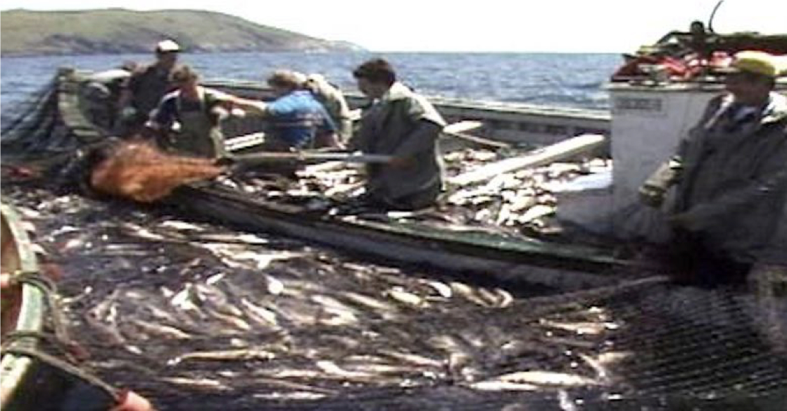

-1-MasterItem.svg)
Stories of Westminster United Church & its People / Page
101
His first posting was at Tilt Cove. His second was at Twillingate where in 1902
Ernest was born;
a baby who would become The Very Reverend Ernest Marshal Frazer Howse,
Westminster’s fifth
minister and eventually the 21st Moderator of The United Church of Canada.
Ernest had only the vaguest memories of Twillingate or his
father’s next posting to Burin, a village at the south end of
the Island accessible only by sea. He did remember that It
was at Burin where he and his father had their first ride in a
trap-skiff powered by a motor. (Traditionally trap-skiffs were
powered by two oarsmen at each side and one at the back to
steer.Such boats were used to work cod fish traps). In the
long story of NFLD fishing the introduction of motor powered
boats was a seminal moment. While oared skiffs continued for a time the motor
eventually replaced
the arduous labour of rowing 30 foot boats loaded with fish. These motors (5 hp
single cylinder
engines) went “putt-putt-putt” and moved the boats (according to Ernest) at the amazing speed
of three miles per hour. That was enough. Life was a bit easier. The picture
shows a motorized
skiff at the trap, the men loading the boat with their catch.
Ernest’s most vivid memories as a child were at Blackhead near Harbour Grace
(historically the place
where Methodism in North America first took root.). He tells how the family
landed at Carbonear met
by a cortege of horses and carriages, and was then driven twelve miles to
Blackhead. He complains
that he had to sit at the back of the carriage looking backward.This didn’t please him but he allows
he enjoyed the ride anyway. He would have been coming on nine at the time.
Blackhead was a 3-point charge for his father who weekly had to preach at three
services: Sunday
morning — Adam Cove to the north, Sunday afternoon-Broad Cove to the south and Blackhead
in the
centre in the evening. The evening service, traditionally was the most important
service of the day.
In these small, remote villages, the church service was the most important event
of the week.
The Howse family lived on $900 a year. In bad times as little as $750 a year.
This salary was paid
when there was money in the village — for example when the fish were sold in the fall. Socks and
mitts were knit and mended by mother. They had a servant girl in lieu of washing
machines and
Rev. Ernest Marshall Howse
